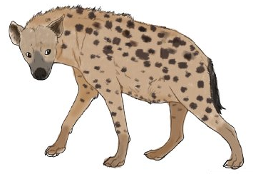
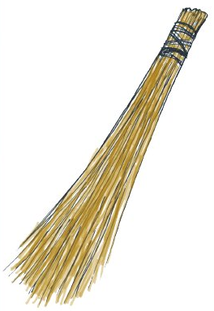
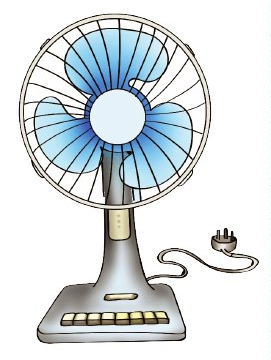

Zoezi la tano
Andika majina ya picha hizi kwenye daftari.
Andika jibu kwa mkono, au tumia kibodi au Breli katika sehemu hii.



Andika majina ya picha hizi kwenye daftari.
Andika jibu kwa mkono, au tumia kibodi au Breli katika sehemu hii.


